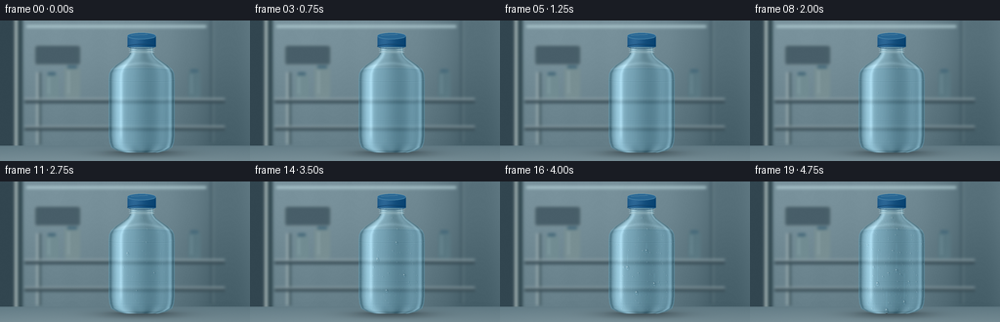
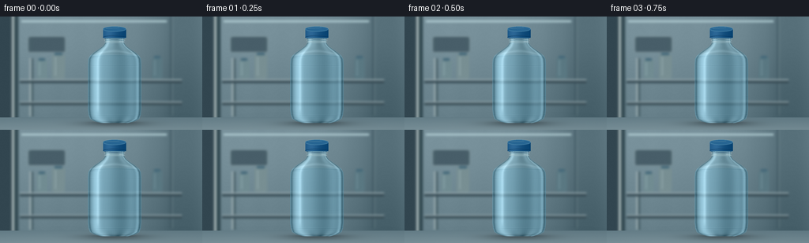

CODING AGENTS AS PIXEL WORLD MODELS
traex/GPT-6.1-Sol · phygen_115
点击播放 · 原生 RGB 像素
逐轮保存的候选
回放视频、检查图与代码变化。
每份候选均可单独播放。实际图片检查记录在下方工具轨迹中。
候选 01播放与检查图
点击播放 · 原生 RGB 像素

展开代码变化
--- 上一保存版本
+++ 本次保存版本
@@ -0,0 +1,264 @@
+"""Procedural RGB timelapse: humidity condenses on a refrigerated PET bottle.
+No input imagery, models, or external rendering software is used.
+"""
+from pathlib import Path
+import json
+import numpy as np
+from PIL import Image, ImageDraw, ImageFilter
+import artifact_io
+
+ROOT = Path(__file__).resolve().parent
+SPEC = json.loads((ROOT / 'task_spec.json').read_text())
+W, H, N = SPEC['width'], SPEC['height'], SPEC['frames']
+S = 4
+WW, HH = W*S, H*S
+Y, X = np.mgrid[0:HH,0:WW].astype(np.float32) / S
+rng = np.random.default_rng(12035)
+
+def gauss(x, m, s):
+ return np.exp(-0.5*((x-m)/s)**2)
+
+def ellipse(draw, box, fill, outline=None, width=1):
+ draw.ellipse(tuple(int(v*S) for v in box), fill=fill, outline=outline, width=max(1,int(width*S)))
+
+def line(draw, pts, fill, width=1):
+ draw.line([(int(x*S),int(y*S)) for x,y in pts], fill=fill, width=max(1,int(width*S)))
+
+# Cool room interior: softly defocused steel wall, shelving and a vent.
+bg = np.zeros((HH,WW,3),dtype=np.float32)
+for c, val in enumerate([90,115,125]):
+ bg[:,:,c] = val + 24*gauss(X,74,91) - 12*(Y/H) + 9*gauss(Y,18,47)
+bg += (1.3*np.sin(X/18)+0.6*np.cos(X/4.6))[:,:,None]
+bg -= (17*gauss(X,231,22))[:,:,None]
+background = Image.fromarray(np.uint8(np.clip(bg,0,255)))
+d = ImageDraw.Draw(background)
+# Wall panels, fridge door jamb and a thin overhead fluorescent reflection.
+d.rectangle((0,0,15*S,HH), fill=(50,70,80))
+d.rectangle((15*S,0,18*S,HH), fill=(170,185,185))
+d.rectangle((18*S,0,23*S,HH), fill=(51,74,82))
+line(d,[(216,0),(216,125)],(58,82,93),1.4)
+line(d,[(218,0),(218,125)],(123,144,148),.6)
+line(d,[(27,6),(211,6)],(181,209,215),2.4)
+# Refrigeration air-return grille, well behind the focal plane.
+d.rounded_rectangle((35*S,25*S,83*S,46*S), radius=3*S, fill=(73,96,106), outline=(128,150,157), width=S)
+for y in np.arange(28,45,3):
+ line(d,[(39,y),(79,y)],(42,66,79),1.3)
+ line(d,[(39,y+.8),(79,y+.8)],(143,161,166),.5)
+# Stainless upright and distant wire rack.
+line(d,[(38,53),(38,127)],(154,171,174),2)
+line(d,[(41,53),(41,127)],(55,78,85),1.5)
+line(d,[(25,83),(230,83)],(55,75,84),3.1)
+line(d,[(25,80.3),(230,80.3)],(153,171,176),1.7)
+line(d,[(25,111),(230,111)],(57,77,85),3)
+line(d,[(25,108.5),(230,108.5)],(145,163,169),1.6)
+# Two indistinct containers on the distant shelf establish room depth.
+for x, w, h, color in [(53,13,24,(113,140,146)),(74,16,31,(120,143,147)),(199,13,27,(90,120,130))]:
+ d.rounded_rectangle((int((x-w/2)*S),int((79-h)*S),int((x+w/2)*S),79*S), radius=3*S, fill=color)
+ d.rectangle((int((x-w*.3)*S),int((77-h)*S),int((x+w*.3)*S),int((80-h)*S)),fill=(68,104,121))
+ line(d,[(x-w*.25,82-h),(x-w*.25,75)],tuple(min(255,c+31) for c in color),1)
+background=background.filter(ImageFilter.GaussianBlur(1.45*S))
+bg=np.asarray(background).astype(np.float32)
+# In-focus foreground metal shelf, a thin softly reflective plane.
+plane = Y >= 128.2
+surface = np.stack([95+1.25*(Y-128),120+1.12*(Y-128),130+1.02*(Y-128)],axis=-1)
+surface += (6*gauss(X,71,74))[:,:,None]
+surface += (rng.normal(0,.42,(HH,WW)))[:,:,None]
+bg=np.where(plane[:,:,None],surface,bg)
+bg -= (2*gauss(Y,128.4,.33))[:,:,None]
+# Contact shadow is soft except directly at the foot.
+shadow=(.30*np.exp(-(((X-145)/40)**2+((Y-136.1)/3.8)**2)) +
+ .18*np.exp(-(((X-145)/25)**2+((Y-134.8)/1.1)**2)))
+bg *= (1-shadow[:,:,None])
+
+# Smooth bottle profile: narrow neck, gently rounded shoulder, cylindrical
+# body, and a five-lobed molded PET base. The cap is rendered separately.
+cy = np.array([26,28,34,38,42,46,50,54,60,118,125,130,133,135.4])
+cw = np.array([12.0,12.2,12.5,15.6,21.2,27.2,31.4,33.5,34.0,34.0,33.2,31.3,26.0,17.5])
+width = np.interp(Y,cy,cw).astype(np.float32)
+u = (X-145)/width
+inside = (np.abs(u)<1) & (Y>=26) & (Y<=135.4)
+z = np.sqrt(np.maximum(0,1-u*u))
+edge = np.clip((1-np.abs(u))*S*width,0,1)*inside
+# A simplified refraction map bends the room reflections inside the bottle.
+rx=np.clip((X+u*(5.0+5*z))*S,0,WW-1).astype(int)
+ry=np.clip((Y+(1-z)*.8)*S,0,HH-1).astype(int)
+refract = bg[ry,rx]
+body=refract*np.array([.55,.59,.60])+np.array([39,58,65])
+# Water inside becomes slightly darker below its meniscus.
+water = 1/(1+np.exp(-(Y-48.5)*3))
+body += water[:,:,None]*np.array([-4,1,4])
+body += (z*8)[:,:,None]
+# Curved-surface lighting: broad studio reflections, narrow rim lights,
+# internal dark refraction boundaries, all stationary through the timelapse.
+left = 50*gauss(u,-.70,.12)+20*gauss(u,-.43,.25)
+right = 35*gauss(u,.86,.046)+15*gauss(u,.61,.13)
+edgeref = 20*gauss(np.abs(u),.979,.016)
+dark = 35*gauss(np.abs(u),.943,.032)+13*gauss(u,.23,.23)
+body += (left+right+edgeref-dark)[:,:,None]*np.array([.87,.96,1.0])
+# A rectangular overhead softbox reflection has naturally feathered ends.
+light_y=1/(1+np.exp(-(Y-44)*.45))*1/(1+np.exp((Y-121)*.43))
+body += (23*gauss(u,-.62,.035)*light_y)[:,:,None]
+# The shoulder catches the cool ceiling light in an arc.
+body += (16*gauss(Y,43.8+u*u*6.2,1.2))[:,:,None]
+# Water meniscus, refracted toward the sides, seen faintly through plastic.
+meniscus=48.6+2.8*(1-z)
+body += (11*gauss(Y,meniscus,.28)-8*gauss(Y,meniscus+.65,.44))[:,:,None]*(np.abs(u)<.86)[:,:,None]
+# Molded ribs curve slightly, rather than looking like painted stripes.
+for yy, power in [(61,1.0),(79,.67),(101,.58),(124,1.0)]:
+ bend=yy+1.5*z
+ body += (power*(10*gauss(Y,bend-.45,.25)-11*gauss(Y,bend,.40)+6*gauss(Y,bend+.65,.32)))[:,:,None]
+# Fine stretched plastic striations and molded foot lobes.
+body += (.65*np.sin(u*113)+.35*np.sin(u*71+Y*.16))[:,:,None]
+foot=np.clip((Y-125)/8,0,1)
+body += (foot*(9*np.cos(u*13)-9*gauss(u,0,.12)))[:,:,None]
+basearc=133.0+1.9*z
+body += (16*gauss(Y,basearc,.36)-15*gauss(Y,basearc-.6,.5))[:,:,None]
+body=np.clip(body,0,255)
+base=bg*(1-edge[:,:,None])+body*edge[:,:,None]
+
+# Render screw thread and safety collar around the neck, then the blue cap.
+baseim=Image.fromarray(np.uint8(np.clip(base,0,255)))
+over=Image.new('RGBA',(WW,HH),(0,0,0,0)); d=ImageDraw.Draw(over)
+for yy in [28.0,30.0,32.2]:
+ ellipse(d,(132,yy-1.0,158,yy+1.4),(106,149,163,65),(211,231,234,140),.35)
+line(d,[(133,32),(157,32)],(220,238,239,150),.5)
+# Cap uses its own curved lighting; small knurls remain visible at 256px.
+capwidth=14.6
+capu=(X-145)/capwidth
+capmask=(np.abs(capu)<1)&(Y>=16.0)&(Y<=26.8)
+cap=np.zeros((HH,WW,3),dtype=np.float32)
+for c,col in enumerate([21,80,127]):
+ cap[:,:,c]=col+24*gauss(capu,-.52,.37)-13*np.maximum(capu,0)
+knurl=(2.4*np.cos((X-130)*np.pi*2/.98)-2.5*gauss((X-130)%.98,.78,.12))
+cap += knurl[:,:,None]
+cap += (5*gauss(Y,17.8,.33)-9*gauss(Y,25.6,.4))[:,:,None]
+baseim=Image.alpha_composite(baseim.convert('RGBA'),over).convert('RGB')
+base=np.asarray(baseim).astype(np.float32)
+base=np.where(capmask[:,:,None],cap,base)
+baseim=Image.fromarray(np.uint8(np.clip(base,0,255))).convert('RGBA')
+over=Image.new('RGBA',(WW,HH),(0,0,0,0));d=ImageDraw.Draw(over)
+ellipse(d,(130.4,12.7,159.6,19.2),(44,107,151,255),(109,163,188,255),.45)
+ellipse(d,(132,13.3,158,18.1),(40,102,147,255))
+line(d,[(134,15),(151,14.3)],(112,169,195,150),.45)
+ellipse(d,(130.4,24.0,159.6,28.9),None,(17,63,101,255),.65)
+line(d,[(131,27.2),(159,27.2)],(73,128,161,255),.5)
+base=np.asarray(Image.alpha_composite(baseim,over).convert('RGB')).astype(np.float32)
+
+# Fixed nucleation sites give temporally coherent droplets. They begin as
+# microscopic dots and slowly gain volume, as warmer humid air meets cold PET.
+# Physical foreshortening on a curved surface is reflected in bead widths.
+sites=[]
+for _ in range(435):
+ y=float(rng.uniform(37,131.4))
+ half=float(np.interp(y,cy,cw))
+ angle=float(rng.uniform(-1.38,1.38))
+ x=145+half*np.sin(angle)
+ cosine=np.cos(angle)
+ birth=float(rng.uniform(.01,.56))
+ final=float(rng.uniform(.28,.94))
+ if rng.random()<.11: final=float(rng.uniform(1.0,1.50))
+ sites.append((x,y,cosine,birth,final,float(rng.uniform(0,6.28))))
+# Dense dew is subtly visible even before the larger beads become distinct.
+micros=[]
+for _ in range(1200):
+ y=float(rng.uniform(38,132))
+ half=float(np.interp(y,cy,cw))
+ u0=float(rng.uniform(-.94,.94))
+ micros.append((145+half*u0,y,float(rng.uniform(.05,.7)),float(rng.uniform(.09,.23))))
+# Several locally coalesced drops eventually overcome surface adhesion.
+runners=[(130.5,74.0,.61,31.0,2.05),
+ (150.0,62.5,.72,29.0,1.8),
+ (158.0,94.0,.68,30.0,1.9),
+ (139.8,112.0,.80,20.5,2.15)]
+
+def bead(image,x,y,r,squash=1.0,stretch=1.0,phase=0):
+ """A transparent water lens: refraction, rim shadow, and softbox glints."""
+ if r<.07: return
+ rx=r*max(.37,squash)
+ ry=r*stretch
+ margin=.50
+ x0=max(0,int((x-rx-margin)*S)); x1=min(WW,int((x+rx+margin)*S)+1)
+ y0=max(0,int((y-ry-margin)*S)); y1=min(HH,int((y+ry+margin)*S)+1)
+ xx=(X[y0:y1,x0:x1]-x)/rx
+ yy=(Y[y0:y1,x0:x1]-y)/ry
+ # Slight asymmetry of a gravity-stretched large bead, no hard outline.
+ xx=xx*(1-.065*yy*min(r/1.4,1))
+ q=np.sqrt(xx*xx+yy*yy)
+ a=np.clip((1-q)*min(rx,ry)*S+0.5,0,1)
+ if not np.any(a): return
+ # Lens refracts nearby bottle colors, creating bright lower caustics.
+ lens=np.sqrt(np.maximum(0,1-q*q))
+ sx=np.clip((X[y0:y1,x0:x1]+xx*r*.48*lens)*S,0,WW-1).astype(int)
+ sy=np.clip((Y[y0:y1,x0:x1]+yy*r*.48*lens+.19*r)*S,0,HH-1).astype(int)
+ col=base[sy,sx].copy()
+ rim=gauss(q,.89,.09)
+ # Thin dark rim gives water droplets weight without an ink outline.
+ col -= (rim*(13+11*np.maximum(0,yy)+8*np.maximum(0,xx)))[:,:,None]
+ col -= (7*gauss(xx,.25,.48)*gauss(yy,-.18,.38))[:,:,None]
+ caustic=24*gauss(q,.70,.13)*np.clip(.4+yy*.62-xx*.35,0,1)
+ col += caustic[:,:,None]*np.array([.85,.97,1])
+ spec=gauss(xx,-.34,.16)*gauss(yy,-.47,.17)
+ col=col*(1-.81*spec[:,:,None])+np.array([239,251,253])*(.81*spec[:,:,None])
+ # Tiny secondary lower highlight from the metal surface.
+ col += (13*gauss(xx,.20,.30)*gauss(yy,.70,.10))[:,:,None]
+ region=image[y0:y1,x0:x1]
+ image[y0:y1,x0:x1]=region*(1-a[:,:,None])+np.clip(col,0,255)*a[:,:,None]
+
+frames=[]
+for frame in range(N):
+ t=frame/(N-1)
+ image=base.copy()
+ # Microscopically wet plastic softly diffuses the reflection, never frosts.
+ wetness=np.clip((t-.04)/.67,0,1)
+ veil=.027*wetness*(.75+.25*np.sin(Y*.08))*inside
+ image=image*(1-veil[:,:,None])+np.array([169,192,196])*veil[:,:,None]
+ for x,y,birth,radius in micros:
+ growth=np.clip((t-birth)/.45,0,1)
+ if growth>0:
+ bead(image,x,y,radius*growth,.8,1.0)
+ active=[]
+ for x,y,cs,birth,final,phase in sites:
+ age=max(0,(t-birth)/(1-birth))
+ r=final*age**.65
+ if r<.045: continue
+ # Small droplets in a runner's swept path are taken into the big bead.
+ swept=False
+ for ax,ay,start,dist,rr in runners:
+ travel=dist*np.clip((t-start)/(1-start),0,1)**1.45
+ if t>start and abs(x-ax)<rr*.79 and ay-1<y<ay+travel+1:
+ swept=True;break
+ if not swept: active.append((x,y,r,cs,phase))
+ # Approximate coalescence of neighboring large nucleated beads.
+ # Volume, not radius, is conserved when contacts join.
+ active.sort(key=lambda a:a[2],reverse=True)
+ merged=[]
+ for x,y,r,cs,phase in active:
+ for k,(ax,ay,ar,acs,aph) in enumerate(merged):
+ if ar>.65 and r>.35 and (x-ax)**2+(y-ay)**2 < ((ar+r)*.66)**2:
+ v=r**3; av=ar**3
+ merged[k]=((x*v+ax*av)/(v+av),(y*v+ay*av)/(v+av),(v+av)**(1/3),acs,aph)
+ break
+ else: merged.append((x,y,r,cs,phase))
+ # Smallest beads first, and mature beads on top.
+ for x,y,r,cs,phase in sorted(merged,key=lambda p:p[2]):
+ bead(image,x,y,r,cs,1+.12*max(0,r-.9),phase)
+ for ax,ay,start,dist,rr in runners:
+ formation=np.clip((t-.22)/(start-.22),0,1)
+ radius=.1+(rr-.1)*formation**1.35
+ travel=dist*np.clip((t-start)/(1-start),0,1)**1.45
+ if travel>.1:
+ # A narrow clear rivulet remains behind the descending large drop.
+ taper=.24+.08*np.sin(Y*.6+ax)
+ streak=gauss(X,ax,taper)*((Y>ay)&(Y<ay+travel))
+ streak*=inside
+ image += streak[:,:,None]*np.array([7,10,11])
+ boundary=gauss(X,ax+.4,.13)*((Y>ay)&(Y<ay+travel))*inside
+ image-=boundary[:,:,None]*3
+ bead(image,ax,ay+travel,radius,.94,1.08+.24*min(travel/9,1))
+ # Stable fine sensor grain and optical antialiasing.
+ image += (rng.normal(0,.20,(HH,WW)))[:,:,None]
+ rendered=Image.fromarray(np.uint8(np.clip(image,0,255))).resize((W,H),Image.Resampling.LANCZOS)
+ frames.append(np.asarray(rendered))
+frames=np.stack(frames).astype(np.uint8)
+artifact_io.save(frames,ROOT)
+print('Saved',frames.shape,'RGB,',SPEC['fps'],'fps to',ROOT)
候选 02播放与检查图
点击播放 · 原生 RGB 像素

展开代码变化
--- 上一保存版本
+++ 本次保存版本
@@ -85,7 +85,7 @@
refract = bg[ry,rx]
body=refract*np.array([.55,.59,.60])+np.array([39,58,65])
# Water inside becomes slightly darker below its meniscus.
-water = 1/(1+np.exp(-(Y-48.5)*3))
+water = 1/(1+np.exp(np.clip(-(Y-48.5)*3,-80,80)))
body += water[:,:,None]*np.array([-4,1,4])
body += (z*8)[:,:,None]
# Curved-surface lighting: broad studio reflections, narrow rim lights,
@@ -155,8 +155,8 @@
x=145+half*np.sin(angle)
cosine=np.cos(angle)
birth=float(rng.uniform(.01,.56))
- final=float(rng.uniform(.28,.94))
- if rng.random()<.11: final=float(rng.uniform(1.0,1.50))
+ final=float(rng.uniform(.42,1.22))
+ if rng.random()<.11: final=float(rng.uniform(1.3,1.85))
sites.append((x,y,cosine,birth,final,float(rng.uniform(0,6.28))))
# Dense dew is subtly visible even before the larger beads become distinct.
micros=[]
@@ -193,7 +193,7 @@
col=base[sy,sx].copy()
rim=gauss(q,.89,.09)
# Thin dark rim gives water droplets weight without an ink outline.
- col -= (rim*(13+11*np.maximum(0,yy)+8*np.maximum(0,xx)))[:,:,None]
+ col -= (rim*(18+14*np.maximum(0,yy)+9*np.maximum(0,xx)))[:,:,None]
col -= (7*gauss(xx,.25,.48)*gauss(yy,-.18,.38))[:,:,None]
caustic=24*gauss(q,.70,.13)*np.clip(.4+yy*.62-xx*.35,0,1)
col += caustic[:,:,None]*np.array([.85,.97,1])
可观测工具轨迹
实际执行的命令与返回图片。
命令 1exit 0
/bin/bash -lc 'ls -la && cat prompt.txt && cat GENERATION_RULES.md && cat task_spec.json'
命令 2exit 0
/bin/bash -lc "cat artifact_io.py && cat player_template.html && python - <<'PY'
import numpy,PIL
print('numpy',numpy.__version__,'PIL',PIL.__version__)
PY"命令 3exit 0
/bin/bash -lc 'which ffmpeg || true; ls .agents'
命令 4exit 0
/bin/bash -lc "cat > generate.py <<'PY'
\"\"\"Procedural RGB timelapse: humidity condenses on a refrigerated PET bottle.
No input imagery, models, or external rendering software is used.
\"\"\"
from pathlib import Path
import json
import numpy as np
from PIL import Image, ImageDraw, ImageFilter
import artifact_io
ROOT = Path(__file__).resolve().parent
SPEC = json.loads((ROOT / 'task_spec.json').read_text())
W, H, N = SPEC['width'], SPEC['height'], SPEC['frames']
S = 4
WW, HH = W*S, H*S
Y, X = np.mgrid[0:HH,0:WW].astype(np.float32) / S
rng = np.random.default_rng(12035)
def gauss(x, m, s):
return np.exp(-0.5*((x-m)/s)**2)
def ellipse(draw, box, fill, outline=None, width=1):
draw.ellipse(tuple(int(v*S) for v in box), fill=fill, outline=outline, width=max(1,int(width*S)))
def line(draw, pts, fill, width=1):
draw.line([(int(x*S),int(y*S)) for x,y in pts], fill=fill, width=max(1,int(width*S)))
# Cool room interior: softly defocused steel wall, shelving and a vent.
bg = np.zeros((HH,WW,3),dtype=np.float32)
for c, val in enumerate([90,115,125]):
bg[:,:,c] = val + 24*gauss(X,74,91) - 12*(Y/H) + 9*gauss(Y,18,47)
bg += (1.3*np.sin(X/18)+0.6*np.cos(X/4.6))[:,:,None]
bg -= (17*gauss(X,231,22))[:,:,None]
background = Image.fromarray(np.uint8(np.clip(bg,0,255)))
d = ImageDraw.Draw(background)
# Wall panels, fridge door jamb and a thin overhead fluorescent reflection.
d.rectangle((0,0,15*S,HH), fill=(50,70,80))
d.rectangle((15*S,0,18*S,HH), fill=(170,185,185))
d.rectangle((18*S,0,23*S,HH), fill=(51,74,82))
line(d,[(216,0),(216,125)],(58,82,93),1.4)
line(d,[(218,0),(218,125)],(123,144,148),.6)
line(d,[(27,6),(211,6)],(181,209,215),2.4)
# Refrigeration air-return grille, well behind the focal plane.
d.rounded_rectangle((35*S,25*S,83*S,46*S), radius=3*S, fill=(73,96,106), outline=(128,150,157), width=S)
for y in np.arange(28,45,3):
line(d,[(39,y),(79,y)],(42,66,79),1.3)
line(d,[(39,y+.8),(79,y+.8)],(143,161,166),.5)
# Stainless upright and distant wire rack.
line(d,[(38,53),(38,127)],(154,171,174),2)
line(d,[(41,53),(41,127)],(55,78,85),1.5)
line(d,[(25,83),(230,83)],(55,75,84),3.1)
line(d,[(25,80.3),(230,80.3)],(153,171,176),1.7)
line(d,[(25,111),(230,111)],(57,77,85),3)
line(d,[(25,108.5),(230,108.5)],(145,163,169),1.6)
# Two indistinct containers on the distant shelf establish room depth.
for x, w, h, color in [(53,13,24,(113,140,146)),(74,16,31,(120,143,147)),(199,13,27,(90,120,130))]:
d.rounded_rectangle((int((x-w/2)*S),int((79-h)*S),int((x+w/2)*S),79*S), radius=3*S, fill=color)
d.rectangle((int((x-w*.3)*S),int((77-h)*S),int((x+w*.3)*S),int((80-h)*S)),fill=(68,104,121))
line(d,[(x-w*.25,82-h),(x-w*.25,75)],tuple(min(255,c+31) for c in color),1)
background=background.filter(ImageFilter.GaussianBlur(1.45*S))
bg=np.asarray(background).astype(np.float32)
# In-focus foreground metal shelf, a thin softly reflective plane.
plane = Y >= 128.2
surface = np.stack([95+1.25*(Y-128),120+1.12*(Y-128),130+1.02*(Y-128)],axis=-1)
surface += (6*gauss(X,71,74))[:,:,None]
surface += (rng.normal(0,.42,(HH,WW)))[:,:,None]
bg=np.where(plane[:,:,None],surface,bg)
bg -= (2*gauss(Y,128.4,.33))[:,:,None]
# Contact shadow is soft except directly at the foot.
shadow=(.30*np.exp(-(((X-145)/40)**2+((Y-136.1)/3.8)**2)) +
.18*np.exp(-(((X-145)/25)**2+((Y-134.8)/1.1)**2)))
bg *= (1-shadow[:,:,None])
# Smooth bottle profile: narrow neck, gently rounded shoulder, cylindrical
# body, and a five-lobed molded PET base. The cap is rendered separately.
cy = np.array([26,28,34,38,42,46,50,54,60,118,125,130,133,135.4])
cw = np.array([12.0,12.2,12.5,15.6,21.2,27.2,31.4,33.5,34.0,34.0,33.2,31.3,26.0,17.5])
width = np.interp(Y,cy,cw).astype(np.float32)
u = (X-145)/width
inside = (np.abs(u)<1) & (Y>=26) & (Y<=135.4)
z = np.sqrt(np.maximum(0,1-u*u))
edge = np.clip((1-np.abs(u))*S*width,0,1)*inside
# A simplified refraction map bends the room reflections inside the bottle.
rx=np.clip((X+u*(5.0+5*z))*S,0,WW-1).astype(int)
ry=np.clip((Y+(1-z)*.8)*S,0,HH-1).astype(int)
refract = bg[ry,rx]
body=refract*np.array([.55,.59,.60])+np.array([39,58,65])
# Water inside becomes slightly darker below its meniscus.
water = 1/(1+np.exp(-(Y-48.5)*3))
body += water[:,:,None]*np.array([-4,1,4])
body += (z*8)[:,:,None]
# Curved-surface lighting: broad studio reflections, narrow rim lights,
# internal dark refraction boundaries, all stationary through the timelapse.
left = 50*gauss(u,-.70,.12)+20*gauss(u,-.43,.25)
right = 35*gauss(u,.86,.046)+15*gauss(u,.61,.13)
edgeref = 20*gauss(np.abs(u),.979,.016)
dark = 35*gauss(np.abs(u),.943,.032)+13*gauss(u,.23,.23)
body += (left+right+edgeref-dark)[:,:,None]*np.array([.87,.96,1.0])
# A rectangular overhead softbox reflection has naturally feathered ends.
light_y=1/(1+np.exp(-(Y-44)*.45))*1/(1+np.exp((Y-121)*.43))
body += (23*gauss(u,-.62,.035)*light_y)[:,:,None]
# The shoulder catches the cool ceiling light in an arc.
body += (16*gauss(Y,43.8+u*u*6.2,1.2))[:,:,None]
# Water meniscus, refracted toward the sides, seen faintly through plastic.
meniscus=48.6+2.8*(1-z)
body += (11*gauss(Y,meniscus,.28)-8*gauss(Y,meniscus+.65,.44))[:,:,None]*(np.abs(u)<.86)[:,:,None]
# Molded ribs curve slightly, rather than looking like painted stripes.
for yy, power in [(61,1.0),(79,.67),(101,.58),(124,1.0)]:
bend=yy+1.5*z
body += (power*(10*gauss(Y,bend-.45,.25)-11*gauss(Y,bend,.40)+6*gauss(Y,bend+.65,.32)))[:,:,None]
# Fine stretched plastic striations and molded foot lobes.
body += (.65*np.sin(u*113)+.35*np.sin(u*71+Y*.16))[:,:,None]
foot=np.clip((Y-125)/8,0,1)
body += (foot*(9*np.cos(u*13)-9*gauss(u,0,.12)))[:,:,None]
basearc=133.0+1.9*z
body += (16*gauss(Y,basearc,.36)-15*gauss(Y,basearc-.6,.5))[:,:,None]
body=np.clip(body,0,255)
base=bg*(1-edge[:,:,None])+body*edge[:,:,None]
# Render screw thread and safety collar around the neck, then the blue cap.
baseim=Image.fromarray(np.uint8(np.clip(base,0,255)))
over=Image.new('RGBA',(WW,HH),(0,0,0,0)); d=ImageDraw.Draw(over)
for yy in [28.0,30.0,32.2]:
ellipse(d,(132,yy-1.0,158,yy+1.4),(106,149,163,65),(211,231,234,140),.35)
line(d,[(133,32),(157,32)],(220,238,239,150),.5)
# Cap uses its own curved lighting; small knurls remain visible at 256px.
capwidth=14.6
capu=(X-145)/capwidth
capmask=(np.abs(capu)<1)&(Y>=16.0)&(Y<=26.8)
cap=np.zeros((HH,WW,3),dtype=np.float32)
for c,col in enumerate([21,80,127]):
cap[:,:,c]=col+24*gauss(capu,-.52,.37)-13*np.maximum(capu,0)
knurl=(2.4*np.cos((X-130)*np.pi*2/.98)-2.5*gauss((X-130)%.98,.78,.12))
cap += knurl[:,:,None]
cap += (5*gauss(Y,17.8,.33)-9*gauss(Y,25.6,.4))[:,:,None]
baseim=Image.alpha_composite(baseim.convert('RGBA'),over).convert('RGB')
base=np.asarray(baseim).astype(np.float32)
base=np.where(capmask[:,:,None],cap,base)
baseim=Image.fromarray(np.uint8(np.clip(base,0,255))).convert('RGBA')
over=Image.new('RGBA',(WW,HH),(0,0,0,0));d=ImageDraw.Draw(over)
ellipse(d,(130.4,12.7,159.6,19.2),(44,107,151,255),(109,163,188,255),.45)
ellipse(d,(132,13.3,158,18.1),(40,102,147,255))
line(d,[(134,15),(151,14.3)],(112,169,195,150),.45)
ellipse(d,(130.4,24.0,159.6,28.9),None,(17,63,101,255),.65)
line(d,[(131,27.2),(159,27.2)],(73,128,161,255),.5)
base=np.asarray(Image.alpha_composite(baseim,over).convert('RGB')).astype(np.float32)
# Fixed nucleation sites give temporally coherent droplets. They begin as
# microscopic dots and slowly gain volume, as warmer humid air meets cold PET.
# Physical foreshortening on a curved surface is reflected in bead widths.
sites=[]
for _ in range(435):
y=float(rng.uniform(37,131.4))
half=float(np.interp(y,cy,cw))
angle=float(rng.uniform(-1.38,1.38))
x=145+half*np.sin(angle)
cosine=np.cos(angle)
birth=float(rng.uniform(.01,.56))
final=float(rng.uniform(.28,.94))
if rng.random()<.11: final=float(rng.uniform(1.0,1.50))
sites.append((x,y,cosine,birth,final,float(rng.uniform(0,6.28))))
# Dense dew is subtly visible even before the larger beads become distinct.
micros=[]
for _ in range(1200):
y=float(rng.uniform(38,132))
half=float(np.interp(y,cy,cw))
u0=float(rng.uniform(-.94,.94))
micros.append((145+half*u0,y,float(rng.uniform(.05,.7)),float(rng.uniform(.09,.23))))
# Several locally coalesced drops eventually overcome surface adhesion.
runners=[(130.5,74.0,.61,31.0,2.05),
(150.0,62.5,.72,29.0,1.8),
(158.0,94.0,.68,30.0,1.9),
(139.8,112.0,.80,20.5,2.15)]
def bead(image,x,y,r,squash=1.0,stretch=1.0,phase=0):
\"\"\"A transparent water lens: refraction, rim shadow, and softbox glints.\"\"\"
if r<.07: return
rx=r*max(.37,squash)
ry=r*stretch
margin=.50
x0=max(0,int((x-rx-margin)*S)); x1=min(WW,int((x+rx+margin)*S)+1)
y0=max(0,int((y-ry-margin)*S)); y1=min(HH,int((y+ry+margin)*S)+1)
xx=(X[y0:y1,x0:x1]-x)/rx
yy=(Y[y0:y1,x0:x1]-y)/ry
# Slight asymmetry of a gravity-stretched large bead, no hard outline.
xx=xx*(1-.065*yy*min(r/1.4,1))
q=np.sqrt(xx*xx+yy*yy)
a=np.clip((1-q)*min(rx,ry)*S+0.5,0,1)
if not np.any(a): return
# Lens refracts nearby bottle colors, creating bright lower caustics.
lens=np.sqrt(np.maximum(0,1-q*q))
sx=np.clip((X[y0:y1,x0:x1]+xx*r*.48*lens)*S,0,WW-1).astype(int)
sy=np.clip((Y[y0:y1,x0:x1]+yy*r*.48*lens+.19*r)*S,0,HH-1).astype(int)
col=base[sy,sx].copy()
rim=gauss(q,.89,.09)
# Thin dark rim gives water droplets weight without an ink outline.
col -= (rim*(13+11*np.maximum(0,yy)+8*np.maximum(0,xx)))[:,:,None]
col -= (7*gauss(xx,.25,.48)*gauss(yy,-.18,.38))[:,:,None]
caustic=24*gauss(q,.70,.13)*np.clip(.4+yy*.62-xx*.35,0,1)
col += caustic[:,:,None]*np.array([.85,.97,1])
spec=gauss(xx,-.34,.16)*gauss(yy,-.47,.17)
col=col*(1-.81*spec[:,:,None])+np.array([239,251,253])*(.81*spec[:,:,None])
# Tiny secondary lower highlight from the metal surface.
col += (13*gauss(xx,.20,.30)*gauss(yy,.70,.10))[:,:,None]
region=image[y0:y1,x0:x1]
image[y0:y1,x0:x1]=region*(1-a[:,:,None])+np.clip(col,0,255)*a[:,:,None]
frames=[]
for frame in range(N):
t=frame/(N-1)
image=base.copy()
# Microscopically wet plastic softly diffuses the reflection, never frosts.
wetness=np.clip((t-.04)/.67,0,1)
veil=.027*wetness*(.75+.25*np.sin(Y*.08))*inside
image=image*(1-veil[:,:,None])+np.array([169,192,196])*veil[:,:,None]
for x,y,birth,radius in micros:
growth=np.clip((t-birth)/.45,0,1)
if growth>0:
bead(image,x,y,radius*growth,.8,1.0)
active=[]
for x,y,cs,birth,final,phase in sites:
age=max(0,(t-birth)/(1-birth))
r=final*age**.65
if r<.045: continue
# Small droplets in a runner's swept path are taken into the big bead.
swept=False
for ax,ay,start,dist,rr in runners:
travel=dist*np.clip((t-start)/(1-start),0,1)**1.45
if t>start and abs(x-ax)<rr*.79 and ay-1<y<ay+travel+1:
swept=True;break
if not swept: active.append((x,y,r,cs,phase))
# Approximate coalescence of neighboring large nucleated beads.
# Volume, not radius, is conserved when contacts join.
active.sort(key=lambda a:a[2],reverse=True)
merged=[]
for x,y,r,cs,phase in active:
for k,(ax,ay,ar,acs,aph) in enumerate(merged):
if ar>.65 and r>.35 and (x-ax)**2+(y-ay)**2 < ((ar+r)*.66)**2:
v=r**3; av=ar**3
merged[k]=((x*v+ax*av)/(v+av),(y*v+ay*av)/(v+av),(v+av)**(1/3),acs,aph)
break
else: merged.append((x,y,r,cs,phase))
# Smallest beads first, and mature beads on top.
for x,y,r,cs,phase in sorted(merged,key=lambda p:p[2]):
bead(image,x,y,r,cs,1+.12*max(0,r-.9),phase)
for ax,ay,start,dist,rr in runners:
formation=np.clip((t-.22)/(start-.22),0,1)
radius=.1+(rr-.1)*formation**1.35
travel=dist*np.clip((t-start)/(1-start),0,1)**1.45
if travel>.1:
# A narrow clear rivulet remains behind the descending large drop.
taper=.24+.08*np.sin(Y*.6+ax)
streak=gauss(X,ax,taper)*((Y>ay)&(Y<ay+travel))
streak*=inside
image += streak[:,:,None]*np.array([7,10,11])
boundary=gauss(X,ax+.4,.13)*((Y>ay)&(Y<ay+travel))*inside
image-=boundary[:,:,None]*3
bead(image,ax,ay+travel,radius,.94,1.08+.24*min(travel/9,1))
# Stable fine sensor grain and optical antialiasing.
image += (rng.normal(0,.20,(HH,WW)))[:,:,None]
rendered=Image.fromarray(np.uint8(np.clip(image,0,255))).resize((W,H),Image.Resampling.LANCZOS)
frames.append(np.asarray(rendered))
frames=np.stack(frames).astype(np.uint8)
artifact_io.save(frames,ROOT)
print('Saved',frames.shape,'RGB,',SPEC['fps'],'fps to',ROOT)
PY
python generate.py"命令 5exit 0
/bin/bash -lc "python - <<'PY'
from pathlib import Path
import numpy as np
from PIL import Image
p=Path('.')
a=np.load('pixels.npz')['pixels']
assert a.shape==(144,256,20)
fs=sorted((p/'frames').glob('*.png'))
assert len(fs)==20
assert all(Image.open(f).mode=='RGB' and Image.open(f).size==(256,144) for f in fs)
f0=np.asarray(Image.open(fs[0])).astype(float);f1=np.asarray(Image.open(fs[-1])).astype(float)
print('Verified 20 RGB frames and packed tensor:',a.shape)
print('Mean bottle-region change:',np.abs(f1[38:134,111:179]-f0[38:134,111:179]).mean())
for name in ['generate.py','pixels.npz','index.html','inspection.png','transition_check.png']:
q=p/name
assert q.exists() and q.stat().st_size>0
print(name,q.stat().st_size,'bytes')
PY"命令 6exit 0
/bin/bash -lc "python - <<'PY'
p='generate.py'
s=open(p).read().replace('np.exp(-(Y-48.5)*3)','np.exp(np.clip(-(Y-48.5)*3,-80,80))').replace('rng.uniform(.28,.94)','rng.uniform(.42,1.22)').replace('rng.uniform(1.0,1.50)','rng.uniform(1.3,1.85)').replace('rim*(13+11*np.maximum(0,yy)+8*np.maximum(0,xx))','rim*(18+14*np.maximum(0,yy)+9*np.maximum(0,xx))')
open(p,'w').write(s)
PY
python generate.py
python - <<'PY'
import numpy as np
from pathlib import Path
from PIL import Image
p=Path('.')
a=np.load('pixels.npz')['pixels']
fs=sorted((p/'frames').glob('*.png'))
assert a.shape==(144,256,20) and len(fs)==20
assert all(Image.open(f).size==(256,144) and Image.open(f).mode=='RGB' for f in fs)
b=np.stack([np.asarray(Image.open(f)) for f in fs])
assert b.dtype==np.uint8 and b.shape==(20,144,256,3)
assert all((p/f).exists() for f in ['generate.py','pixels.npz','index.html','inspection.png','transition_check.png'])
print('Final artifacts verified: 20 RGB frames, 256 x 144, 4 fps, 5 seconds.')
print('Bottle temporal difference:',np.abs(b[-1,38:134,111:179].astype(float)-b[0,38:134,111:179]).mean())
PY"保存候选 2 份；完成命令 6 次；可验证图片返回 0 张。原始 API 响应与完整日志保留在本地。